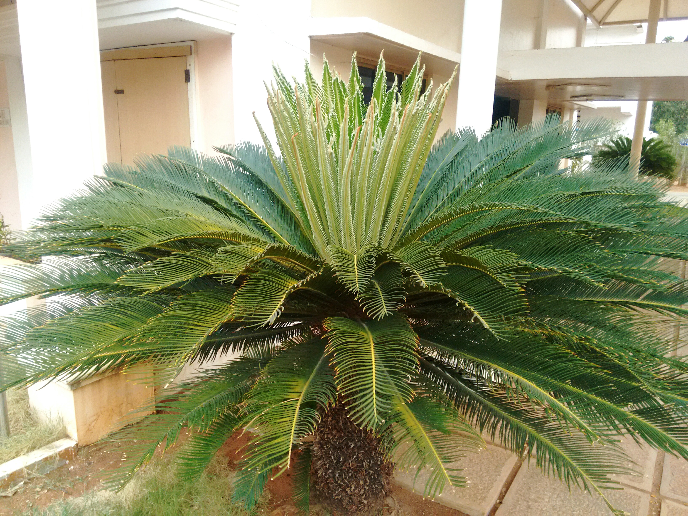

Cycas
- Cycas is a genus of cycad, and the only genus in the family Cycadaceae.
- About 113 species are accepted, which are native to the Asia Pacific, East Africa and Madagascar.
- Cycas circinalis, a species endemic to India, was the first cycad species to be described in western literature, and is the type species of the genus.
- The best-known Cycas species is Cycas revoluta.
- Cycads have been around for millions of years and are sometimes referred to as "living fossils" due to their ancient lineage.
USES:-
- Ornamental: Cycas is often used for landscaping and indoor decoration.
- Food: Source of starch for cooking, particularly the seeds of some species.
- Traditional medicine: Used as a medicine to treat various ailments, but can be toxic if not used properly.
- Construction: Trunks of some species are used as a construction material due to their durability and resistance to insect damage.
Cultural & Historical Importance:
- Cycads, including the cycas plant, have great cultural significance to various indigenous peoples, who use them in ceremonies, rituals, and as a source of food and medicine.
- Cycads have been on the planet for over 300 million years and have played a significant role in the evolution of plant life.
They are considered living fossils and have survived many
extinction events.
- Cycas species have played a role in the development of the
human civilization, as the seeds of some species were used as
a food source in ancient times and the plant was also
cultivated for ornamental purposes.
Plantation:-
- Watering
Cycas plants should be watered moderately, allowing
excess water to drain.Water once every 7-10 days during
growing season, and reduce frequency in winter
- fertilizers
Cycas needs nutrients to grow,Fertilize during the active
season to help it glow,Nitrogen, potassium, and phosphorus
are key,Organic options are great, but follow instructions
carefully
- Temperature and humidity
Cycas plants thrive in warm and humid air,Temperature
between 20-30°C, they fare Relative humidity of 50-70% is
best,Extreme temperatures and fluctuations should be
suppressed
- soil
prefer Well-draining soil, sandy or loamy,Organic
matter, pH slightly lowly,Avoid compacted soil, it can
cause harm,Use a container one size larger, to keep it
calm
- diseases and pestisides
Cycas is relatively resistant,
But pests and diseases may cause persistence,
Good hygiene, avoid overwatering,
Natural/organic methods preferred, follow instructions when
using